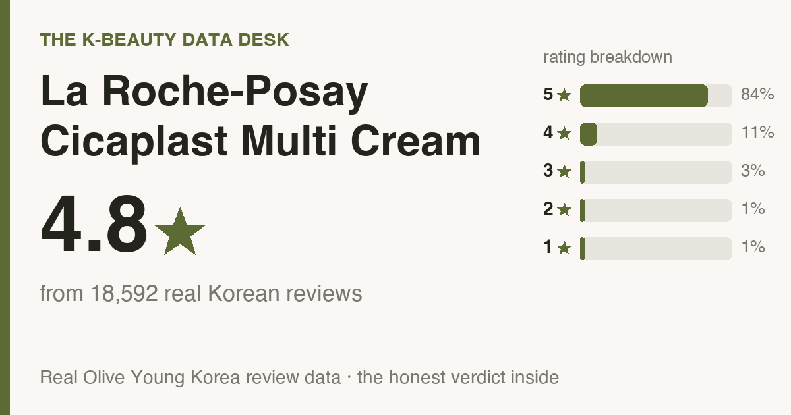
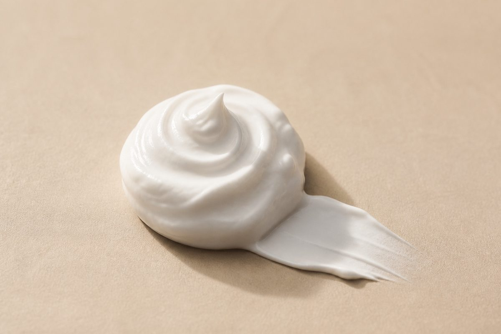
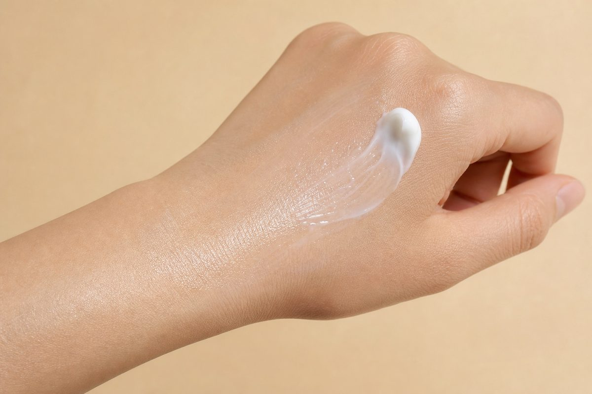

Updated July 2026. The pile here is 18,592 real Olive Young reviews, 500 of which I read one by one. So this is the crowd's verdict, not mine. Every reviewer is a real buyer, and none of them were written, purchased, or translated by me.
Money note before we go: the store links down at the bottom pay me a small commission if you buy through them. You pay the same either way, and none of the numbers below shift because of it.

Skip to the point: It averages 4.8★ (84% gave it five stars) across 18,592 Olive Young reviews, and buyers rate it highest for hydration (49%), soothing redness (49%). It's a combination and dry skin favorite (full who-should-skip rundown below).

On the day I pulled the data (2026-07-13), Olive Young Korea had it at ₩38,600 (≈ $28 at exchange rates). Read that as a Korea number, not a US quote. US retail runs on its own logic, usually higher, and it drifts, so the buy links tell you what it costs where you actually live. The repurchase figure is the interesting one: 7% of reviewers said they bought it again. Most people liked it fine and then quietly moved on. That's a curiosity purchase, not a pantry staple. If budget is doing the deciding, a plain hydrating cream handles the same job for less.
Some context before the numbers. La Roche-Posay Cicaplast Multi Repair Cream sells hard on Olive Young, the Korean chain whose shelves basically decide what a trend becomes. Search it in English, though, and you get a thin TikTok and not much else. So I went into the reviews and pulled out the parts a friend would actually tell you before you hand over money.
The average sits at 4.8 stars, and it isn't a small pack of superfans hauling it upward. 84% of reviewers gave it the full five stars (roughly 4 in 5), with 95% landing at four or five.
Read a few hundred of them and the same praise keeps repeating. People love hydration and soothing redness.
So what does it actually do well? The counts:
Star ratings are the poster. The buy-or-skip information hides further down, so I worked through the 500 most-helpful reviews and tallied what people kept circling back to. A math caveat: everything in this section comes from those 500, while the star ratings and skin-type splits above come from the full pile. What jumped out:
Over on the 5-star side, the phrases that surface again and again are zero irritation, soothing / redness, and no sticky or heavy feel.
For reactive skin this section outranks the star rating by a mile. Among reviewers who brought it up, 65% said it felt gentle with zero sting, and only 2% reported any irritation at all. Data this clean is about the best you get. Your face is still your face, though, so patch-test along your jaw for a couple of days before you commit.
The reviewer pool skews combination (58%), dry (32%), oily (10%), so those are the skin types these reviews describe with any authority (it leans combination and dry skin). Match that profile and you're reading a crowd that's basically your twin. Don't match it, and it isn't a no, just a smaller sample for you, so discount accordingly.
Genuinely worth it for you if:
Who I'd gently steer away (or at least tell to go in eyes-open):
No cream is universal. If one of these is what you're really shopping for, here's the aisle your money belongs in, with ballpark US prices so nothing surprises you:
The names above are well-known starting points to research, not ranked picks. Go vet them yourself and match on what reviewers say each does best, then on price.
My source is the review pile, not the lab sheet, so fragrance stays unverified on my end. The check that actually settles it takes half a minute: pull up the buy page, Ctrl/Cmd-F the ingredient list, and look for "fragrance / parfum" and "alcohol denat." Either one present and your skin known to react to it? Skip. Reviewers called it gentle, but for reactive skin the label decides, not a star average.
Version note, worth ten seconds: La Roche-Posay sells both the original Baume B5 and the newer B5+ (a 2022 reformulation that added a prebiotic ferment), and regional bottles differ a little. The reviews counted here describe the bottle sold in Korea. Before you buy, check which version your store lists, so the tube that arrives is the one you meant to buy.
Routine order is where people fumble this format, so, plainly:

Strong match. Combination skin makes up 58% of reviewers, the largest single group, so the odds tilt your way.
Mostly yes. 65% of reviewers said it felt gentle with no sting. Still patch-test if you react easily, but the irritation rate is genuinely low.
Reviewers land on fast-absorbing and fresh rather than greasy, so the finish reads as dewy hydration instead of a slick. One gap I won't paper over: this is a Korean review base, so it cannot tell you how that finish sits on deeper skin tones, and I'm not manufacturing a verdict the data doesn't hold. Do this instead. Press a thin layer onto one cheek, then check it in daylight and again in a flash selfie before committing. Any dewy formula can go shiny under a flash on any tone, so watching it on your own skin is the only honest test.
Probably not, honestly. Normal skin will enjoy it without ever needing it, and if your current cream is doing its job, this won't rearrange your life. It's a lovely pick when you're starting from scratch or replacing something mediocre, but “I already have one that works” is a completely valid reason to walk away.
Repeat purchases say more than buzz ever will. 7% repurchased, 38% reviewed at the one-month-plus mark, and hydration (49%) is what reviewers most often rate it best for. The re-buy rate is modest, so the fair read is that it does its one job and just doesn't drive anyone to panic-restock.
It's one of the better-reviewed picks in its category, though repeat-buys are modest, so treat it as a try-it, not a staple. Worth it if its top reviewer-voted strengths line up with what your skin actually needs, and you're not buying it for the hyped actives.
I read the reviews, not the ingredient list, so I can't confirm fragrance status. If you're fragrance-sensitive, patch-test on your jaw for 24–48h first.
Honestly, I'm not going to name a dupe I haven't read the reviews for. Line it up against other top sellers in the category and match on the job you need done first, price second.
Two solid lanes: Amazon (pick a listing sold by the brand's official store or by Amazon itself, not a random third-party seller) or Olive Young's own US store at us.oliveyoung.com. Heads-up on the latter: since mid-2026 US shoppers get a smaller US-only catalog, so if it's missing there, Amazon usually has it. Outside the US, Olive Young Global ships to the UK, Canada, Australia, Singapore and more. Links are below.
For combination and dry skin chasing hydration and soothing redness, La Roche-Posay Cicaplast Multi Repair Cream is an easy yes. Judged on what it sets out to do, the crowd is plainly satisfied. If that's your lane and there's no cream you already adore sitting on your shelf, I'd say go for it.
The affection also outlasts week one. 38% of the reviews I read landed after a month or more of use, so people aren't cooling on it once the novelty wears off.
Not your match? Here are other reviews I built the same way, all the numbers and who-should-skip included:
Disclosure: This article contains affiliate links. If you buy through them, I may earn a small commission at no extra cost to you.
If you're in the US:
Outside the US (UK, Canada, Australia, Singapore, NZ and more):
On prices: the only number I can vouch for is the dated Korea shelf price above (pulled 2026-07-13). Stores reprice constantly and bundles muddy comparisons, so always compare the per-item price at the link before you buy.
← All K-Beauty Data Desk reviews · Best-seller rankings · About & methodology
Published by The K-Beauty Data Desk · Data refreshed 2026-07-13. The reviews are 100% real Olive Young buyers. My job was reading them and making them legible; I never wrote, bought, paid for, or translated a single review, and this cream never touched my face. I received no free product and am not paid or approved by the brand. Check the source ratings yourself.
Data basis: aggregate statistics from Olive Young Korea, retrieved 2026-07-13. The ratings, review count, star distribution and satisfaction polls are all facts pulled in aggregate. The wording, decoding and recommendations are mine. I never copy or translate individual user reviews.